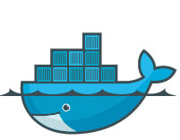

The Many Faces of PostgreSQL Replication
Phil Vacca
About this talk
- Replication options in Postgres
- How to choose
- How to configure
And your presenter
Phil Vacca
Enterprise Data Architect for Mitel Networks

Database Replication is a strategy for building a highly available system
Availability is NOT Recovery
Outages, corruption, and human error happen in the real world
Untargeted (and targeted) bitlocker-style ransom attacks are increasingly common
What makes a system Highly Available?
- Available systems respond to demand
- Available systems react to system failure
- Available systems can upgrade in place
What makes a database Highly Available?
Generally we are referring to a Primary node (often called master) and at least one standby node (replica, slave)
A standby server can be cold, warm, or hot
Principals remain the same regardless of deployment type
Types of Replication
- Streaming
- Synchronous Streaming
- Logical (built-in to PG10)
- Other Methods
Streaming Replication
- Added in 9.2
- Most popular
- Transmits changes as they are committed
A Little History
A very little, promise ;-)
First comes the WAL
The Write-Ahead Log ensures that transactional changes are written to disk only after being written to a transaction log
This is what makes your database recoverable, and another word for this is durable(the D in ACID)
Setting up a replica
Create a standby from a backup of the Primary
A logical backup (from pg_dump) won't be enough
Use the pg_basebackup command to seed a binary replica of the running primary database
The command can write the backup directly to another remote host. See the docs for more options.
on primary
postgresql.conf
wal_level = archive
archive_mode = on
archive_command = 'cp %p /path_to/archive/%f'
on standby host
recovery.conf
standby_mode = true
restore_command = 'cp /path_to/archive/%f %p'
archive_cleanup_command = 'pg_archivecleanup /path_to/archive %r'
Please do not use copy command
Use rsync, or a tool like pgBackRest, instead
WAL Shipping
- Transactions are bundled into a single WAL file
- Limited by the rate of WAL write
- Need WAL archive destination that is reachable by the standby
Wouldn't it be great if. . .
- Changes could be applied as soon as they are received
- There was no intermediary location?
on primary
CREATE ROLE replicator WITH LOGIN REPLICATION;pg_hba.conf
# allow the standby host to connect
host replication replicator 192.168.0.42/32 md5
postgresql.conf
wal_level = hot_standby
full_page_writes = on
wal_log_hints = on
max_wal_senders = 5
wal_keep_segments = 32
on standby host
postgresql.conf
hot_standby = onrecovery.conf
standby_mode = 'on'
primary_conninfo = 'host=192.168.0.23 port=5432 user=replicator'
But what if?
What if there's a gap in processing - maybe a network problem - and the WAL files turn over before replication has read the transactions?
ERROR: requested WAL segment 00000001000000010000002D
has already been removedWith a streaming replica, you can always enable log-shipping as a fall-back plan.
Replication slots
Added in 9.4
They give the Primary a persistent record of the state of replicas
This means that the primary will keep ALL WAL records until slot is received from.
on primary
SELECT * FROM pg_create_physical_replication_slot('standby_replication_slot_alpha');postgresql.conf
max_replication_slots = 5
on replica
recovery.conf
primary_slot_name = 'standby_replication_slot_alpha'
Synchronous streaming replication
Consider another what if. . .
What if an outage occurs after a transaction is logged to the Primary, but before the replica has accepted it?
We need a guaranty that the transaction has been written to one (or more than one) additional host.
on primary
postgresql.conf
synchronous_commit = on
synchronous_standby_names = "1 (named_host1, named_host2)"
Write latency
There is no formula to determine latency when syncronous replication is enabled. It is a function of your network conditions and the health and processing power of the available replicas
Monitoring replication
Basic monitoring is done on the Primary through pg_stat_replication
Additional checks for lag can be done by writing scripts, or using check_postgres.pl
Types of Replication
- Streaming
- Synchronous Streaming
- Logical (built-in to PG10)
- Other Methods
Logical Replication
- Ships differences based on a table's Primary Key
- Can ship only a sub-set of all relations on a cluster
- Does not ship byte-by-byte changes
- Works on a publisher/subscriber model
Common use cases
From the introduction in the docs
- Sending incremental changes in a single database or a subset of a database to subscribers as they occur.
- Firing triggers for individual changes as they arrive on the subscriber.
- Consolidating multiple databases into a single one (for example for analytical purposes).
Use cases continued. . .
- Replicating between different major versions of PostgreSQL.
- Giving access to replicated data to different groups of users.
- Sharing a subset of the database between multiple databases.
Subscribers are simply other instances
This means that the subscriber can write to other tables while still receiving updates from the subscription
You can have any number of subscribers for a publication
Limitations
- Schema alterations (DDL) are not published
- Tables only - no materialized views, foreign tables, partition root tables
- Sequential numbers are replicated but the sequence is not
TRUNCATEis not replicated
Creating a Publication
Done through DDL on Publisher
CREATE PUBLICATION pub_one
-- FOR ALL TABLES
FOR TABLE accounts, users, order_*
WITH (publish = 'insert, update, delete')
;
Altering a publication
Simply use ALTER PUBLICATION
ADD TABLE, DROP TABLE, OWNER TO
Creating a Subscription
A subscription requires a replication slot, but this is usually created for you, unless you specify create_slot = flase
CREATE SUBSCRIPTION sub_one
CONNECTION 'host=192.168.0.23 port=5432 user=somebody dbname=some_db'
PUBLICATION pub_one
-- WITH (enabled = false)
;
Handling Conflict
A conflict on the local node will HALT replication. It must be corrected manually
Other replication methods
Trigger based logical: Slony, Bucardo, xDB
pgpool-ii streaming
File system
Additional considerations
Handling a failover event
Cascading replicas
Taking advantage of replicas for read-only queries
Building a datamart or reporting IDW
Thank you, #SCALE16x!
- Follow me on Twitter @epic_fil
- http://philvacca.com
- http://sixfortwo.com
This presentation was built in reveal.js
Be Seeing You!